Signal K Server
to Signal K Server]* //
Signal
K Supplementary Information (at bottom of page}
Discussion:
Signal K is a data format based upon Java Script Object Notation (JSON) and uses modern web-based communication protocols such as TCP/IP, Hyper Text Transport Protocol (HTTP) and Web Sockets.
It uses a well defined schema to represent marine-related data such as speed, position, depth, wind angles and speed, AIS targets, engine parameters, battery status and much more. Information about Signal K can be found at Signal K Org.
For example, the Signal K representation for a vessel’s position is shown below.
{
"navigation":{
"position":{
"value":{
"altitude":0.0,
"latitude":37.81479,
"longitude":-122.44880152
},
"source":{
"label":"ttyUSB0",
"type":"NMEA0183",
"talker":"GP",
"sentence":"PRMC"
},
"timestamp":"2017-05-16T05:15:50.007Z"
}
}
}
On the other hand, NMEA 0183 uses serial communications based upon RS232/RS422, a simple ASCII text format and specifically formatted sentences to represent marine related data. For example, the following sentence specifies a vessel’s position.
$GPGGA,185515.00,4127.31961078,N,11202.78674931,W,2,19,0.6,1315.194,M,-17.106,M,7.0,0131*40
NMEA 2000 uses the Controller Area Network (CAN bus), which is also used extensively in other industries such as automobiles and manufacturing and uses a binary protocol. Specifically formatted messages called Parameter Group Numbers (PGN) are used to represent marine related data. For example PGN 129025 specifies a vessel’s position and the following is a text representation of the binary data.
09F80101#4D60151A8F807804
Compared with NMEA 0183 and NMEA 2000, Signal K’s JSON format is much more easily understood, and is open-source vs. proprietary.
There are a number of products that can output marine-related data using the Signal K data format:
The open source Signal K Server may be used on a variety of computer platforms to convert NMEA 0183 and/or NMEA 2000 streams into a Signal K stream that is available to clients upon the same network.
OpenMarine’s OpenPlotter packages OpenCPN with Signal K Server for easy installation on Raspberry Pi.
Victron’s Venus-OS has integrated a Linux-based OS with Signal K Server and Node-RED and is supported on a number of platforms including Victron’s Cerbo-GX, Raspberry Pi 3, and Raspberry Pi 4.
None of the mainstream marine electronics vendors such as Raymarine, Garmin, Navico (B&G, Simrad, Lowrance) or Furuno offer products such as GPS receivers, depth, wind and speed transducers, AIS transceivers or VHF radios that support Signal K. Therefore, all of the Signal K server solutions provide gateway services that convert NMEA 0183, NMEA 2000, Seatalk and analog data to and from the Signal K data format.
For detailed information on how to install and perform advanced configuration for these different server implementations, refer to each vendor’s documentation.
The next section describes how to use any of the three supported protocols to connect OpenCPN to a Signal K Server. Choose one of the options available for the connection that suits your use case. Using the native Signal K protocol is normally the best option. In case you need the converted NMEA 0183 messages in OpenCPN (for example for some plugin without native Signal K support), UDP is usually preferred over TCP. Note that OpenCPN does not support the Signal K data format over TCP.
For a Signal K System Diagram

Signal K Server - Signal K data format over HTTP Websocket
Confirm Signal K Server settings. Note the HTTP Port Number (default 3000).
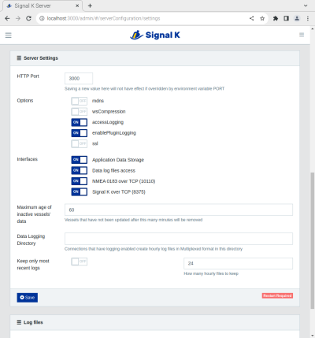
Configure an OpenCPN Signal K connection with the correct IP address and
HTTP port for the Signal K Server:
If Signal K is on same PC use "localhost", else enter the "IP address"
for the Signal K connection.
-
If Signal K Server and OpenCPN are running on the same PC use the preferred IP address: "localhost" or 127.0.0.1. The default port number 3000 will normally be correct unless it’s been changed on the Signal K server.
-
If the Signal K Server is running on a separate PC, verify the IP address of the Signal K Server and enter that instead of the default. Again the port number 3000 will likely be correct.
-
If the Signal K server is set up to use authentication click the more… button and enter the Auth Token code.
-
Enter a User comment if desired for your own use.
-
The List position is to order the connections list if desired. A higher number will put it down.
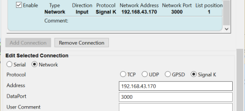
Signal K Server - NMEA 0183 over TCP
Confirm Signal K Server settings. Note the NMEA 0183 over TCP Port number (default 10110)
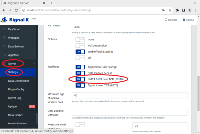
Configure an OpenCPN NMEA 0183 TCP connection with the correct IP address and matching TCP Port.
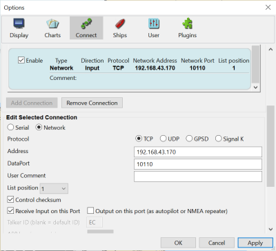
Signal K Server - NMEA 0183 over UDP
An optional Signal K Server plugin is required to enable NMEA 0183 over UDP.
Install/Enable the NMEA 0183 UDP Plugin
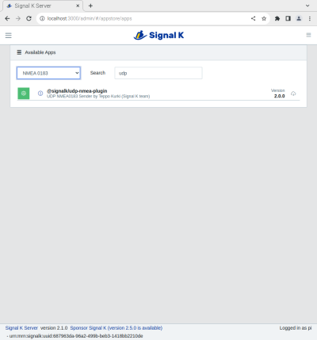
Configure the NMEA 0183 over UDP settings. Note the UDP port number (default is 2000) and decide whether to transmit to a specific address (which must match the IP address of your OpenCPN PC) or to broadcast to all devices on the sub-net.
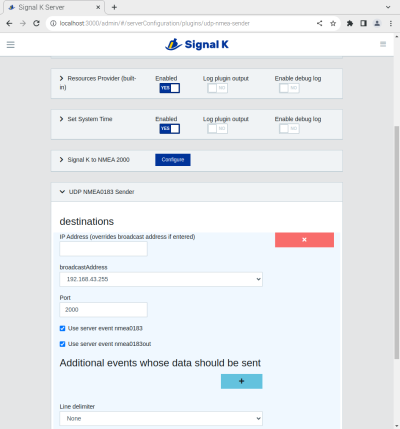
Configure an OpenCPN NMEA 0183 UDP connection with the matching UDP port number. Note the IP address 0.0.0.0 means that the PC will listen on all network interfaces.
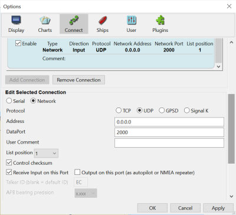
For both NMEA 0183 over TCP or UDP, you must specify which conversions Signal K performs. These are identified by the NMEA 0183 sentence type (eg. DBT for depth, GGA for position, MWV for wind velocity and direction etc.)
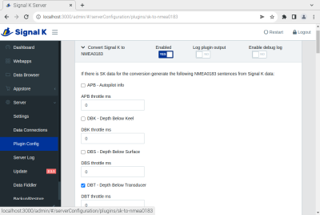
Note that a separate Signal K Server plugin must also be installed if you want to convert AIS messages received by a NMEA 2000 connected transceiver to NMEA 0183.
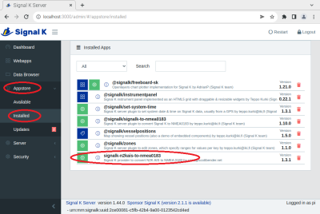
Once installed, configure the plugin to convert NMEA 2000 AIS messages to NMEA 0183..
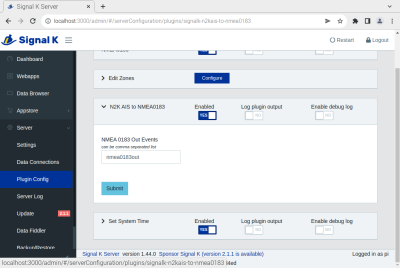
For NMEA 0183 data received by OpenCPN from Signal K Server using either TCP or UDP, the received data can be viewed in the NMEA Debug Window.
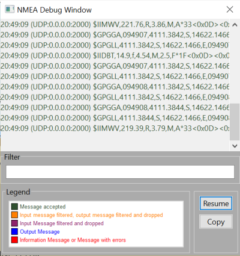
To view the data received by Signal K Server and converted to the Signal K data format, it can be viewed in the Signal K Server Data Browser.
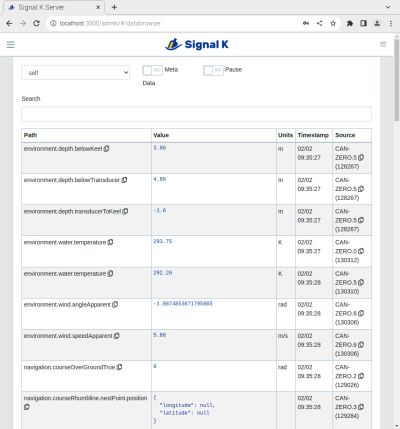